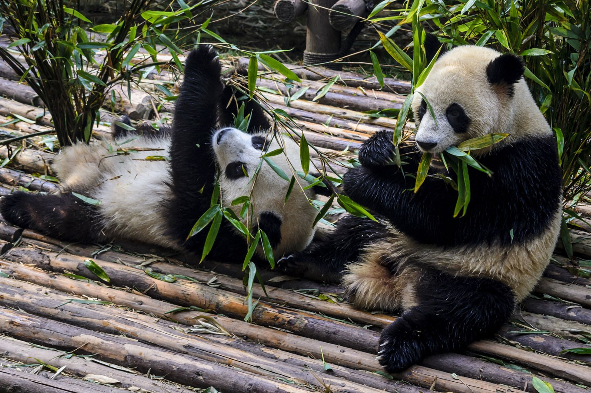

Pandas are one of the most recognizable animals in the world, known for their black-and-white fur, love of bamboo and playful personalities. But there is much more to these adorable animals than meets the eye! Learn some fun and interesting facts about pandas below.
Panda Facts:
Pandas have excellent camouflage for their habitat.
Pandas can swim and event climb trees.
Bamboo is critical to their diet.
Pandas spend most of their day eating.

The pandas we are most used to seeing are Giant Pandas. The Black and White pandas. But we also have Red Pandas who are smaller in size but just as cute.